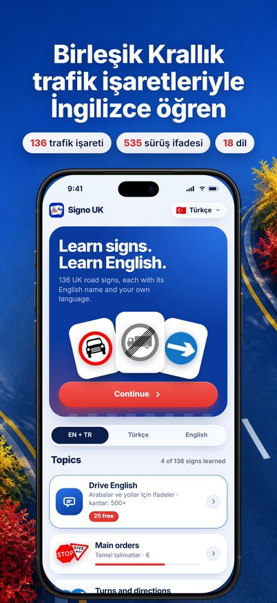
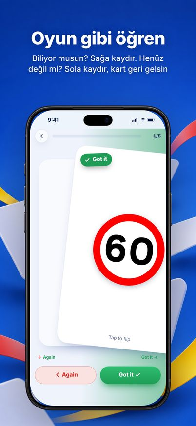
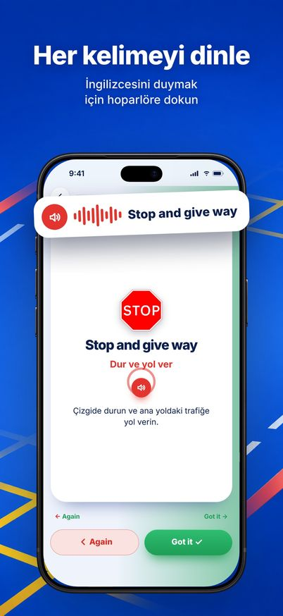
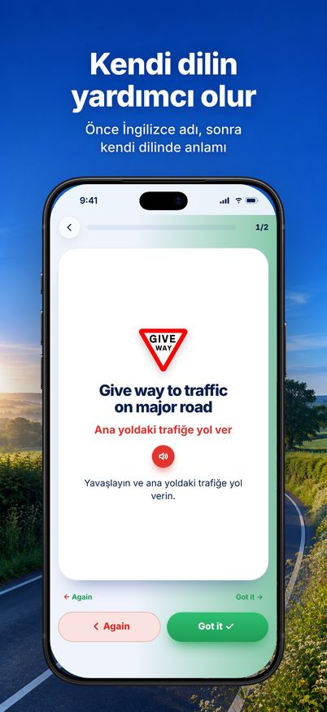
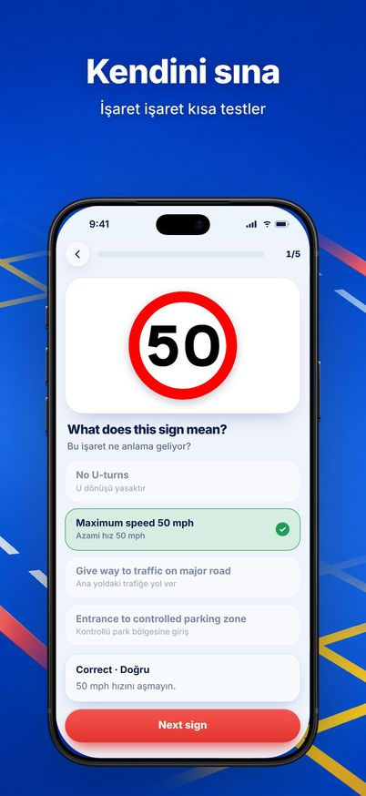
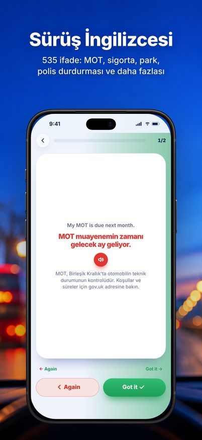
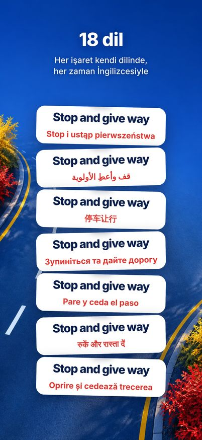
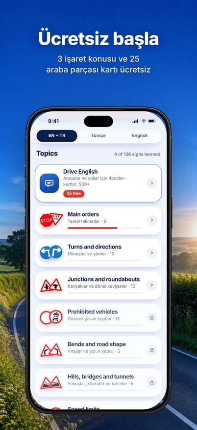

İngiltere trafik işaretleri, Türkçe açıklamalı
Her işaretin anlamı ve İngilizce adı. Signo bir iPhone uygulaması: Birleşik Krallık'ta araç kullanmak için 136 işaret ve 535 ifade, Türkçe açıklamalı.
App Store'dan indirÜcretsiz: 3 işaret konusu ve araba parçalarıyla ilgili 25 kelime. Signo Pro her şeyi açar.


Oyun gibi öğrenin
İşareti biliyorsanız sağa, bilmiyorsanız sola kaydırın, tekrar gelir. Her İngilizce adı İngiliz aksanıyla dinleyin, sonra kısa bir test çözün.








Sık görülen işaretler ve anlamları
Açıklamayı görmek için bir işarete dokunun.
- Dur ve yol verStop and give way
 Ana yoldaki trafiğe yol verGive way to traffic on major road
Ana yoldaki trafiğe yol verGive way to traffic on major road Taşıt trafiğine giriş yasaktırNo entry for vehicular traffic
Taşıt trafiğine giriş yasaktırNo entry for vehicular traffic Ulusal hız sınırı geçerlidirNational speed limit applies
Ulusal hız sınırı geçerlidirNational speed limit applies- Azami hız 30 mphMaximum speed 30 mph
 Azami hız 20 mphMaximum speed 20 mph
Azami hız 20 mphMaximum speed 20 mph Azami hız 40 mphMaximum speed 40 mph
Azami hız 40 mphMaximum speed 40 mph Azami hız 50 mphMaximum speed 50 mph
Azami hız 50 mphMaximum speed 50 mph Azami hız 60 mphMaximum speed 60 mph
Azami hız 60 mphMaximum speed 60 mph 20 mph bölgesine girişEntry to 20 mph zone
20 mph bölgesine girişEntry to 20 mph zone Sollamak yasaktırNo overtaking
Sollamak yasaktırNo overtaking Sağa dönmek yasaktırNo right turn
Sağa dönmek yasaktırNo right turn Sola dönmek yasaktırNo left turn
Sola dönmek yasaktırNo left turn U dönüşü yasaktırNo U-turns
U dönüşü yasaktırNo U-turns Soldan geçKeep left
Soldan geçKeep left Mini dönel kavşakMini-roundabout
Mini dönel kavşakMini-roundabout- İleride dönel kavşakRoundabout ahead
 Bütün taşıtların girmesi yasaktırAll vehicles prohibited
Bütün taşıtların girmesi yasaktırAll vehicles prohibited Motorlu taşıt giremezNo motor vehicles
Motorlu taşıt giremezNo motor vehicles Ana taşıt yolunda durmak yasaktırNo stopping on main carriageway
Ana taşıt yolunda durmak yasaktırNo stopping on main carriageway Yalnızca otobüs, bisiklet ve taksiler için yolRoute for use by buses, pedal cycles and taxis only
Yalnızca otobüs, bisiklet ve taksiler için yolRoute for use by buses, pedal cycles and taxis only Kontrollü park bölgesine girişEntrance to controlled parking zone
Kontrollü park bölgesine girişEntrance to controlled parking zone Yalnızca izin belgesi sahipleriPermit holders only
Yalnızca izin belgesi sahipleriPermit holders only Yalnızca engelli park kartı sahipleriDisabled badge holders only
Yalnızca engelli park kartı sahipleriDisabled badge holders only Park yeriParking place
Park yeriParking place Hız kameralarıSpeed cameras
Hız kameralarıSpeed cameras Dur - PolisStop - Police
Dur - PolisStop - Police Otoyol kurallarının uygulanmaya başladığı noktaPoint at which motorway regulations start to apply
Otoyol kurallarının uygulanmaya başladığı noktaPoint at which motorway regulations start to apply İleride trafik ışıklarıTraffic signals ahead
İleride trafik ışıklarıTraffic signals ahead Çizgili yaya geçidiZebra crossing
Çizgili yaya geçidiZebra crossing İleride okula veya oyun alanına giden ya da oradan gelen çocuklarChildren going to or from school or playground ahead
İleride okula veya oyun alanına giden ya da oradan gelen çocuklarChildren going to or from school or playground ahead Yol çalışmasıRoad works
Yol çalışmasıRoad works Kaygan yolSlippery road
Kaygan yolSlippery road İleride kapılı veya bariyerli hemzemin geçitLevel crossing with gate or barrier ahead
İleride kapılı veya bariyerli hemzemin geçitLevel crossing with gate or barrier ahead İleride kapısız ve bariyersiz demiryolu hemzemin geçidiRailway level crossing without gate or barrier ahead
İleride kapısız ve bariyersiz demiryolu hemzemin geçidiRailway level crossing without gate or barrier ahead Karşı yönden gelen taşıtlara öncelik verGive priority to vehicles from opposite direction
Karşı yönden gelen taşıtlara öncelik verGive priority to vehicles from opposite direction Trafiğin karşı yönden gelen taşıtlara göre geçiş önceliği vardırTraffic has priority over oncoming vehicles
Trafiğin karşı yönden gelen taşıtlara göre geçiş önceliği vardırTraffic has priority over oncoming vehicles Gösterilen yüksekliği aşan taşıtlar giremezNo vehicles over height shown
Gösterilen yüksekliği aşan taşıtlar giremezNo vehicles over height shown İleride T kavşakT-junction ahead
İleride T kavşakT-junction ahead İleride dört yollu kavşakCrossroads ahead
İleride dört yollu kavşakCrossroads ahead Tek şerit genişliğinde yolSingle track road
Tek şerit genişliğinde yolSingle track road Karşılaşma cebiPassing place
Karşılaşma cebiPassing place
Araba parçaları İngilizce
Ücretsiz Drive English bölümünden 25 kelime. Dinlemek için bir kelimeye dokunun.
136 işaretin tamamı uygulamada
Ücretsiz: 3 işaret konusu ve araba parçalarıyla ilgili 25 kelime. Signo Pro her şeyi açar.